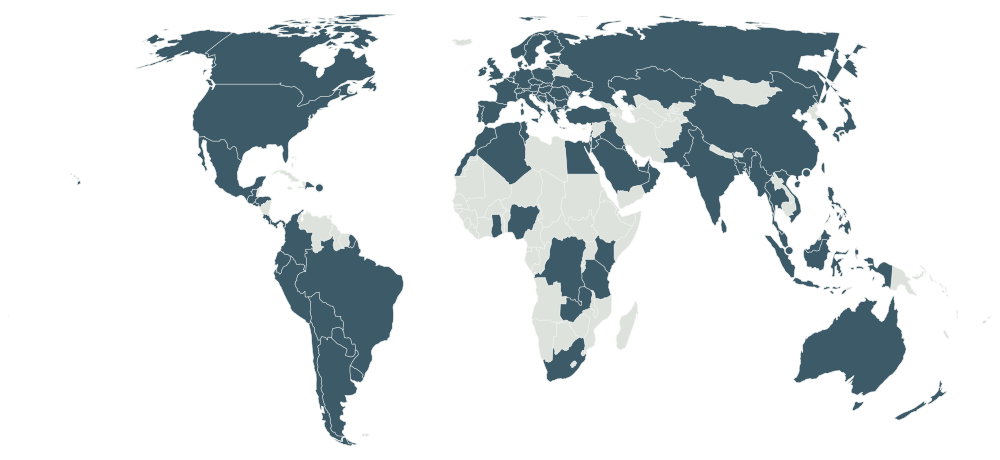

Behavioral Science · University of Chicago Booth
Mapping the rules people live by, across 92 societies.
I am a sixth-year PhD candidate in Behavioral Science at the University of Chicago Booth School of Business, and a visiting researcher in the Department of Psychology at Harvard University.
I study social norms: what different societies choose to regulate, who ensures those rules are followed, and how that varies across cultures. My work combines large-scale cross-cultural surveys, natural language processing, archival data, and laboratory experiments.
I am currently applying for postdoctoral positions.

The Global Architecture of Social Norms
Fieldwork coverage

Research
Ongoing projects
Six projects in progress, spanning cross-cultural survey work, social learning experiments, and cultural variation recovered from language and behavioural records.